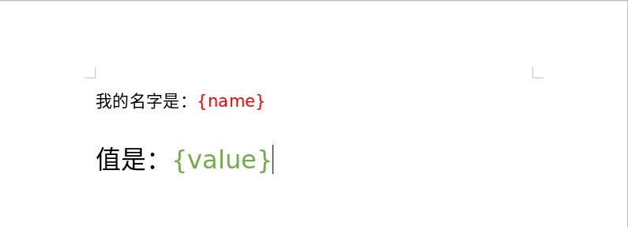
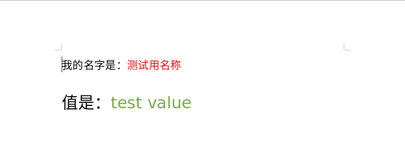
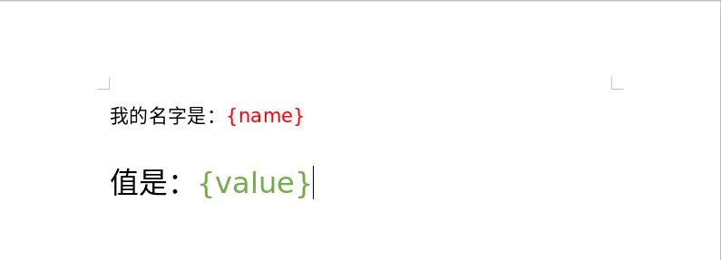
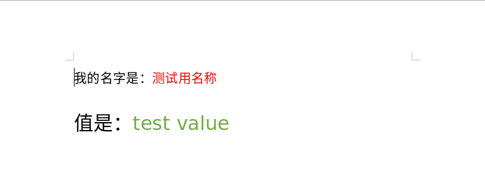

javascript third party
//
代码转换
CMS
react.js
koa
vue
Docs - Read Me ⋅ Storybook
@vueuse/core - npm
GitHub - antfu/vueuse: 🧰 Collection of Composition API utils for Vue 2 and 3
Vue2 原理解析 - axl234 - 博客园
剖析Vue原理&实现双向绑定MVVM - 前端足迹 - SegmentFault 思否
Vue2.1.7源码学习 - 最骚的就是你 - 博客园
深入理解 Vue Computed 计算属性 - 那些年遇到过的坑 - SegmentFault 思否
Flow: A Static Type Checker for JavaScript
关于Vue Function | 大专栏
Vue3中文文档 - vuejs
全局 API | Vue3中文文档 - vuejs
@vueuse/core - npm
GitHub - antfu/vueuse: 🧰 Collection of Composition API utils for Vue 2 and 3
Vue2 原理解析 - axl234 - 博客园
剖析Vue原理&实现双向绑定MVVM - 前端足迹 - SegmentFault 思否
Vue2.1.7源码学习 - 最骚的就是你 - 博客园
深入理解 Vue Computed 计算属性 - 那些年遇到过的坑 - SegmentFault 思否
Flow: A Static Type Checker for JavaScript
关于Vue Function | 大专栏
Vue3中文文档 - vuejs
全局 API | Vue3中文文档 - vuejs
m3u8 download
web ppt
The HTML presentation framework | reveal.js
Reveal.js：把你的 Markdown 文稿变成 PPT_WeisongZhao-CSDN博客
GitHub - impress/impress.js: It's a presentation framework based on the power of CSS3 transforms and transitions in modern browsers and inspired by the idea behind prezi.com.
alvarotrigo/fullPage.js: fullPage plugin by Alvaro Trigo. Create full screen pages fast and simple
Reveal.js：把你的 Markdown 文稿变成 PPT_WeisongZhao-CSDN博客
GitHub - impress/impress.js: It's a presentation framework based on the power of CSS3 transforms and transitions in modern browsers and inspired by the idea behind prezi.com.
alvarotrigo/fullPage.js: fullPage plugin by Alvaro Trigo. Create full screen pages fast and simple
big number
跨平台构建应用框架
Electron | 使用 JavaScript，HTML 和 CSS 构建跨平台的桌面应用程序。
文档 | Electron
Apache Cordova
Cordova中文网
cordova linux 安装并编出第一个demo-android - 愤怒的企鹅 - 博客园
Open Source Framework for Native Mobile Apps - NativeScript
JSBridge的原理及使用_Flying-CSDN博客
JSBridge总结 - 简书
GitHub - lzyzsd/JsBridge: android java and javascript bridge, inspired by wechat webview jsbridge
Hybrid APP基础篇(四)->JSBridge的原理 - 撒网要见鱼 - 博客园
GitHub - quickhybrid/quickhybrid: 快速混合开发框架，JSBridge提供核心Android、iOS功能。多平台API支撑，部分兼容浏览器
Capacitor: Cross-platform native runtime for web apps
文档 | Electron
Apache Cordova
Cordova中文网
cordova linux 安装并编出第一个demo-android - 愤怒的企鹅 - 博客园
Open Source Framework for Native Mobile Apps - NativeScript
JSBridge的原理及使用_Flying-CSDN博客
JSBridge总结 - 简书
GitHub - lzyzsd/JsBridge: android java and javascript bridge, inspired by wechat webview jsbridge
Hybrid APP基础篇(四)->JSBridge的原理 - 撒网要见鱼 - 博客园
GitHub - quickhybrid/quickhybrid: 快速混合开发框架，JSBridge提供核心Android、iOS功能。多平台API支撑，部分兼容浏览器
Capacitor: Cross-platform native runtime for web apps
二维码qrcode
node canvas
terminal in browser using node.js
阿里云官方镜像站
图片和视频的元信息如拍摄时间, 拍摄位置等
图片文件中含有exif格式的元信息
npm exifr The fastest and most versatile JavaScript EXIF reading library
EXIF.org – EXIF and related resources
视频文件中含有iptc格式的元信息, 下面几个npm package均需要在本地安装ExifTool软件, 链接地址为下面的ExifTool by Phil Harvey
npm exiftool : A node.js wrapper around exiftool, a commandline utility that can extract metadata from many different filetypes, including JPEG, PNG, PDF, WMV, MOV. For a full list see the exiftool list of supported filetypes.
npm node-exiftool : A Node.js interface to the exiftool command-line application
This is a package is exiftool nodejs wrapped version. With this wrapped version, you can read / create / edit / remove image exif / iptc settings very easy
ExifTool by Phil Harvey
IPTC standard
npm exifr The fastest and most versatile JavaScript EXIF reading library
EXIF.org – EXIF and related resources
视频文件中含有iptc格式的元信息, 下面几个npm package均需要在本地安装ExifTool软件, 链接地址为下面的ExifTool by Phil Harvey
npm exiftool : A node.js wrapper around exiftool, a commandline utility that can extract metadata from many different filetypes, including JPEG, PNG, PDF, WMV, MOV. For a full list see the exiftool list of supported filetypes.
npm node-exiftool : A Node.js interface to the exiftool command-line application
This is a package is exiftool nodejs wrapped version. With this wrapped version, you can read / create / edit / remove image exif / iptc settings very easy
ExifTool by Phil Harvey
IPTC standard
ChromeDriver
基于js的轻量级数据库
cache-database - npm
pouchdb - npm base on couchDB
minimongo - npm A client-side MongoDB implementation which supports basic queries, including some geospatial ones
mWater/minimongo: Client-side in-memory mongodb backed by localstorage with server sync over http
npm ZangoDB is a MongoDB-like interface for HTML5 IndexedDB that supports most of the familiar filtering, projection, sorting, updating and aggregation features of MongoDB, for usage in the web browser
npm nedb Embedded persistent or in memory database for Node.js, nw.js, Electron and browsers, 100% JavaScript, no binary dependency. API is a subset of MongoDB's and it's plenty fast.
pouchdb - npm base on couchDB
minimongo - npm A client-side MongoDB implementation which supports basic queries, including some geospatial ones
mWater/minimongo: Client-side in-memory mongodb backed by localstorage with server sync over http
npm ZangoDB is a MongoDB-like interface for HTML5 IndexedDB that supports most of the familiar filtering, projection, sorting, updating and aggregation features of MongoDB, for usage in the web browser
npm nedb Embedded persistent or in memory database for Node.js, nw.js, Electron and browsers, 100% JavaScript, no binary dependency. API is a subset of MongoDB's and it's plenty fast.
WebDAV
文件压缩
参考jszip, 在浏览器或node.js中对文件进行zip压缩
npm jszip
github jszip
github.io jszip
https://github.com/Stuk/jszip/blob/master/documentation/howto/read_zip.md
example
npm jszip
github jszip
github.io jszip
https://github.com/Stuk/jszip/blob/master/documentation/howto/read_zip.md
example
node.js接收formdata数据
参考
npm busboy
github busboy
npm async-busboy
github async-busboy
类型formdata发送的请求报文中的属性是没有类型的, 无法区分数值, 字符串, 数组, 数组套数组, 例如[1, 2, ["3"], 4]和[1, 2, 3, 4]的收到的报文内容是一样的, 所以要想区分这些可以在浏览器端将所有除文件外的所有属性放在一个对象中然后将这个对象用JSON.stringify(obj)转成字符串在指定一个属性名称用formdata.append存入, 在服务端读取这个指定名称的属性然后将属性值用JSON.parse解析出来即可
注意在接收请求报文时相应的属性是有顺序的, 将文件内容属性放在后面, 这样在服务端接收到文件内容之前可以读出所有除文件内容的属性值, 在文件很大时将文件的内容按流式处理不要一次性全读出来避免内存占用过大.
npm busboy
github busboy
npm async-busboy
github async-busboy
类型formdata发送的请求报文中的属性是没有类型的, 无法区分数值, 字符串, 数组, 数组套数组, 例如[1, 2, ["3"], 4]和[1, 2, 3, 4]的收到的报文内容是一样的, 所以要想区分这些可以在浏览器端将所有除文件外的所有属性放在一个对象中然后将这个对象用JSON.stringify(obj)转成字符串在指定一个属性名称用formdata.append存入, 在服务端读取这个指定名称的属性然后将属性值用JSON.parse解析出来即可
注意在接收请求报文时相应的属性是有顺序的, 将文件内容属性放在后面, 这样在服务端接收到文件内容之前可以读出所有除文件内容的属性值, 在文件很大时将文件的内容按流式处理不要一次性全读出来避免内存占用过大.
vscode
linux环境下在vscode中调试nodejs代码时若打开的路径是用软链接时会导致断点无法绑定(Breakpoint set but not yet bound)
例如:
代码文件夹的真实路径为:~/true_path/code/nodejs_code
~/soft_link -> ~/true_path/code/nodejs_code
在vscode中打开~/soft_link文件夹则会导致断点无法绑定
设置显示或隐藏某些文件
在设置中搜索
files.exclude
文件名与下面列表中匹配的即隐藏不显示
例如:
代码文件夹的真实路径为:~/true_path/code/nodejs_code
~/soft_link -> ~/true_path/code/nodejs_code
在vscode中打开~/soft_link文件夹则会导致断点无法绑定
设置显示或隐藏某些文件
在设置中搜索
files.exclude
文件名与下面列表中匹配的即隐藏不显示
Browserify
webpack
在webpack 4.42.1版本中json文件不需要在配置文件中配置loader, 直接使用就可, 若配置了loader则会报错
pdf.js : 读取并显示pdf文件
PDF.js
github : GitHub - mozilla/pdf.js: PDF Reader in JavaScript
jsPDF : HTML5 PDF Generator
npm : jspdf - npm
github : GitHub - MrRio/jsPDF: Client-side JavaScript PDF generation for everyone.
jsPDF
jsPDF - HTML5 PDF Generator | Parallax
jsPDF - 简书
jsPDF – 基于 HTML5 的强大 PDF 生成工具 - 阳光岛主 - 博客园
PDFKit : A JavaScript PDF generation library for Node and the browser.
PDFKit
GitHub - foliojs/pdfkit: A JavaScript PDF generation library for Node and the browser
PDF.js
github : GitHub - mozilla/pdf.js: PDF Reader in JavaScript
jsPDF : HTML5 PDF Generator
npm : jspdf - npm
github : GitHub - MrRio/jsPDF: Client-side JavaScript PDF generation for everyone.
jsPDF
jsPDF - HTML5 PDF Generator | Parallax
jsPDF - 简书
jsPDF – 基于 HTML5 的强大 PDF 生成工具 - 阳光岛主 - 博客园
PDFKit : A JavaScript PDF generation library for Node and the browser.
PDFKit
GitHub - foliojs/pdfkit: A JavaScript PDF generation library for Node and the browser
解析office文档及pdf等
textract a text extraction node module.
textract能够解析如下类型的文件:
HTML, HTM
ATOM, RSS Markdown
EPUB
XML, XSL
PDF
DOC, DOCX
ODT, OTT (experimental, feedback needed!)
RTF
XLS, XLSX, XLSB, XLSM, XLTX
CSV ODS, OTS
PPTX, POTX
ODP, OTP
ODG, OTG
PNG, JPG, GIF
DXF
application/javascript
All text/* mime-types.
参考地址如下:
npm : https://www.npmjs.com/package/textract
github : https://github.com/dbashford/textract
pdf2json is a node.js module that parses and converts PDF from binary to json format, it's built with pdf.js and extends it with interactive form elements and text content parsing outside browser.
参考地址如下:
npm : https://www.npmjs.com/package/pdf2json
github : https://github.com/modesty/pdf2json
其它参考文献: NodeJs之word文件生成与解析
textract能够解析如下类型的文件:
HTML, HTM
ATOM, RSS Markdown
EPUB
XML, XSL
DOC, DOCX
ODT, OTT (experimental, feedback needed!)
RTF
XLS, XLSX, XLSB, XLSM, XLTX
CSV ODS, OTS
PPTX, POTX
ODP, OTP
ODG, OTG
PNG, JPG, GIF
DXF
application/javascript
All text/* mime-types.
参考地址如下:
npm : https://www.npmjs.com/package/textract
github : https://github.com/dbashford/textract
pdf2json is a node.js module that parses and converts PDF from binary to json format, it's built with pdf.js and extends it with interactive form elements and text content parsing outside browser.
参考地址如下:
npm : https://www.npmjs.com/package/pdf2json
github : https://github.com/modesty/pdf2json
其它参考文献: NodeJs之word文件生成与解析
microsoft office
docxtemplater is a library to generate docx/pptx documents from a docx/pptx template. It can replace {placeholders} with data and also supports loops and conditions. The templates can be edited by non-programmers, for example your clients.
docxtemplater 支持node.js端和浏览器端根据word文件模板替换{placeholders}形式的占位符生成新的word文件, ppt亦同
npm : https://www.npmjs.com/package/docxtemplater
github : https://github.com/open-xml-templating/docxtemplater
网址1: https://docxtemplater.com/
document: https://docxtemplater.readthedocs.io/en/latest/generate.html
docxtemplater源代码
nodejs端先安装
cnpm install --save docxtemplater pizzip
编写word模板文档, 打开word输入内容, 并设置好格式, 如图:

其中的{name}是一个占位符, 占位符的名称是"name", 后面生成的文件{name}会被整个替换, {value}相似
编写代码:

browser client
示例代码
js 实现纯前端将数据导出excel两种方式，亲测有效 - hhzzcc_的博客 - CSDN博客
exceljs - npm
GitHub - exceljs/exceljs: Excel Workbook Manager
exceljs 中文文档
SheetJS - Home
如何使用JavaScript实现纯前端读取和导出excel文件 - 我是小茗同学 - 博客园
officegen is Creating Office Open XML files (Word, Excel and Powerpoint) for Microsoft Office 2007 and later without external tools, just pure Javascript. officegen should work on any environment that supports Node.js including Linux, OSX and Windows. officegen also supporting PowerPoint native charts objects with embedded data.
officegen源代码
docxtemplater 支持node.js端和浏览器端根据word文件模板替换{placeholders}形式的占位符生成新的word文件, ppt亦同
npm : https://www.npmjs.com/package/docxtemplater
github : https://github.com/open-xml-templating/docxtemplater
网址1: https://docxtemplater.com/
document: https://docxtemplater.readthedocs.io/en/latest/generate.html
docxtemplater源代码
nodejs端先安装
cnpm install --save docxtemplater pizzip
编写word模板文档, 打开word输入内容, 并设置好格式, 如图:

其中的{name}是一个占位符, 占位符的名称是"name", 后面生成的文件{name}会被整个替换, {value}相似
编写代码:
const fs = require('fs');
const path = require('path');
const PizZip = require('pizzip');
const Docxtemplater = require('docxtemplater');
try {
let content = fs.readFileSync('./test.docx');
const zip_i = new PizZip(content);
let doc = new Docxtemplater(zip_i);
doc.setData({
name : '测试用名称',
value : 'test value'
});
doc.render();
const zip_o = doc.getZip();
const buf = zip_o.generate({
type : 'nodebuffer'
});
fs.writeFileSync('./output.docx', buf);
} catch (e) {
console.log(e);
}
运行代码生成文件名称为output.docx的结果文件如下图:
const path = require('path');
const PizZip = require('pizzip');
const Docxtemplater = require('docxtemplater');
try {
let content = fs.readFileSync('./test.docx');
const zip_i = new PizZip(content);
let doc = new Docxtemplater(zip_i);
doc.setData({
name : '测试用名称',
value : 'test value'
});
doc.render();
const zip_o = doc.getZip();
const buf = zip_o.generate({
type : 'nodebuffer'
});
fs.writeFileSync('./output.docx', buf);
} catch (e) {
console.log(e);
}

browser client
示例代码
js 实现纯前端将数据导出excel两种方式，亲测有效 - hhzzcc_的博客 - CSDN博客
exceljs - npm
GitHub - exceljs/exceljs: Excel Workbook Manager
exceljs 中文文档
SheetJS - Home
如何使用JavaScript实现纯前端读取和导出excel文件 - 我是小茗同学 - 博客园
officegen is Creating Office Open XML files (Word, Excel and Powerpoint) for Microsoft Office 2007 and later without external tools, just pure Javascript. officegen should work on any environment that supports Node.js including Linux, OSX and Windows. officegen also supporting PowerPoint native charts objects with embedded data.
officegen源代码
d3.js
echarts
echarts 4.7.0 用npm或cnpm安装后或是从github源码中有一个map文件夹, 里面是地图文件其中的china.json是中国地图文件
npm安装包
国内访问外网都很慢，甚至不能访问！安装Node时自带的npm地址默认是http://registry.npmjs.org, npm install没反应！
用cnpm代替npm安装并使用国内的镜像库https://registry.npm.taobao.org
cnpmjs.org: Private npm registry and web for Company
npm install cnpm -g --registry=https://registry.npm.taobao.org
GitHub - cnpm/cnpm: cnpm: npm client for China mirror of npm
cnpmjs.org: Private npm registry and web for Company
For developers in China, please visit the China mirror
但是在一个项目中npm与cnpm不能混用, 即当有些包是用npm安装的则再用cnpm安装其它包会报错, 反之亦然
可以使用nrm来管理仓库的源nrm - npm
安装:npm install -g nrm
查看源列表:nrm ls
切换并使用taobao源:nrm use taobao
用cnpm代替npm安装并使用国内的镜像库https://registry.npm.taobao.org
cnpmjs.org: Private npm registry and web for Company
npm install cnpm -g --registry=https://registry.npm.taobao.org
GitHub - cnpm/cnpm: cnpm: npm client for China mirror of npm
cnpmjs.org: Private npm registry and web for Company
For developers in China, please visit the China mirror
但是在一个项目中npm与cnpm不能混用, 即当有些包是用npm安装的则再用cnpm安装其它包会报错, 反之亦然
可以使用nrm来管理仓库的源nrm - npm
安装:npm install -g nrm
查看源列表:nrm ls
切换并使用taobao源:nrm use taobao